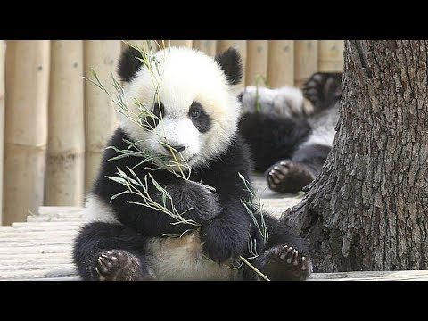

Панды обладают большими размерами, массивным телом и толстыми крепкими конечностями. Рост взрослых особей варьируется от 1,2 до 1,6 м, а вес может доходить до 160 кг. В целом, панды напоминают своим обликом обычных медведей с одним небольшим отличием: у этих созданий есть хвостик, длиной 10-15 см.
